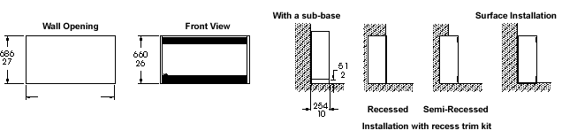
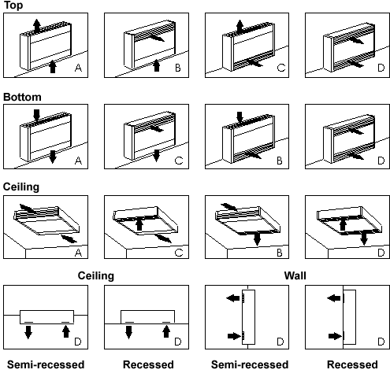

BN Thermic Instruction Sheet
OCH Forced Air Cabinet Unit Heaters
INSTALLATION AND OPERATING INSTRUCTIONS
PACKAGING - Unpack the heater carefully and remove all packaging material ensuring that all open areas are unobstructed, remove and retain these instructions for future use. Please dispose of the packaging in accordance with the current or local regulations pertaining to waste.
LOCATION - Uses are for general space heating and therefore must not be installed or used in any area containing flammable and or explosive gases or dust. Do not cover the heater as this can cause overheating and may damage the heater and could result in a risk of fire.
POSITIONING - This range of heater is intended for low or high level mounting, refer to diagrams for possible mounting configurations. The heater must not be installed immediately below a fixed socket outlet.
- Do not install air outlets less than 600 mm from an opposite surface and/ or 300 mm from an adjacent surface.
- Always isolate all power supplies to the unit before attempting any work or maintenance.
- Filters must only be fitted if a regular maintenance is to be provided. Do not use filters in ceiling applications.
RECESS AND SEMI RECESS MOUNTING - Refer to diagram for possible mounting configurations.
- The unit must be installed with the trim frame of appropriate length.
- Provide an opening of 25 mm oversize from the actual length and height of the unit.
- Remove the front panel and open the control section door. Remove the appropriate knockouts and secure the supply and control cables.
- Secure the trim frame to the unit using the supplied self tapping screws.
- Secure the unit in place without warping and using appropriate fixing screws, shim if required. For ceiling application use 1⁄2" x 13 UNC treaded rods.
- The unit must be connected according to local and national regulations. Refer to wiring diagram on the control section door.
- Close the control section door and refit the front panel in place. Test the unit by temporarily setting the thermostat to maximum
SURFACE MOUNTING - Run the supply and control cables to the back of the unit and remove the front panel and open the control section door. Remove the appropriate knockouts and secure the supply and control cables. Please refer to steps 5 through to 7 of recess and semi recessed mounting.
CONNECTIONS - Connections to the mains supply should be made by means of a suitable switch or other switching device in accordance with the current regulations and protected by a fuse, or circuit breaker. Connections should be carried out by qualified and competent persons. THIS HEATER MUST BE EARTHED.
CONTROLS - The heater is fitted with a tamperproof thermostat. Adjustment can be made using a small screwdriver The heating can be controlled from full heat to half heat by means of switches on the front panel, these will also require the use of a small screw driver
 GENERAL MAINTENANCE OF ELECTRIC HEATERS
Prior to commencing any periodic cleaning or servicing always ensure the supply to the heater is completely isolated.
BN Thermic Electric heaters are factory assembled and tested they are non user serviceable
The heaters are intended to operate for many years, problem free.
All moving parts are factory lubricated and therefore should require no service.
Maintenance is limited to keeping both the inlet and outlet areas free from any accumulation of dust or any other foreign materials This is especially important immediately before the heating season. Any dust build up can be loosened using a brush and a vacuum cleaner applied to the airways to ensure completed removal of any dust When the heater is first turned on after cleaning an unusual odour may be noted this is due to the dust panicles which inevitably will be disturbed and will be burnt off from the heating element
If in any doubt always consult a qualified electrician for advice.
WARRANTY Your BN Thermic Heater is guaranteed for the period of one year from the date of purchase. We will repair or replace at our discretion any pan found to be defective. BN Thermic cannot assume any consequential liability. This guarantee in no way prejudices your nights under common law and is offered as an addition to consumer liability rights.